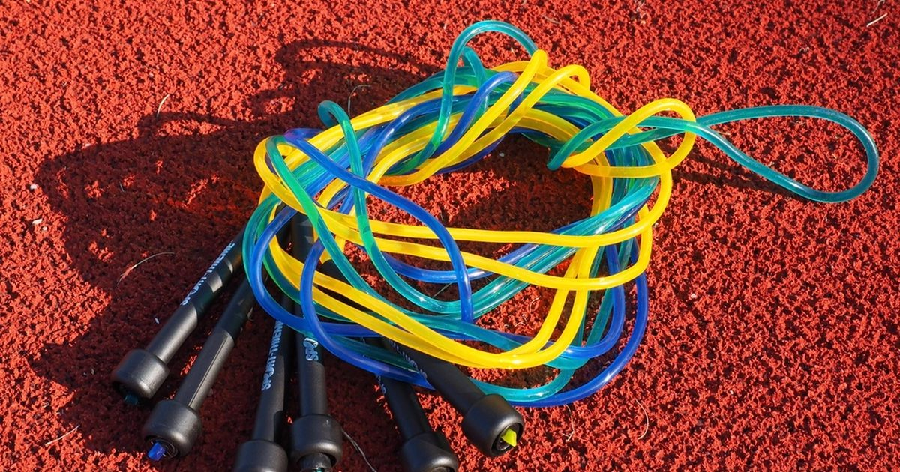

Minimal Gear
Jump Rope Alternatives for Apartments
Skipping is excellent conditioning and almost unusable in a flat. Here are the alternatives, honestly ranked by how much of it they actually replace.

A skipping rope is one of the best value pieces of conditioning equipment in existence: cheap, portable, and genuinely demanding. It is also close to unusable in most flats, for three separate reasons.
Why skipping fails in a flat
Impact. Repeated landing, hundreds of times per session, is exactly the noise profile that carries into the flat below. There is no mat that makes this acceptable.
Ceiling height. The rope needs to clear your head, which requires roughly your height plus 40 to 50 centimetres. Standard ceilings are borderline and low ones rule it out entirely — see low-ceiling workouts.
Space and obstructions. The rope arc needs clearance in all directions, which most rooms do not have once furniture is accounted for.
What you are actually replacing
Worth being precise, because the alternatives differ in what they deliver.
Skipping provides: sustained elevated heart rate, calf and foot conditioning, coordination and rhythm, and a high work rate in a small footprint. Most people want the first of those and get the rest incidentally.
If it is the conditioning you want, the alternatives below cover it well. If it is specifically the calf and foot loading, or the coordination, the substitutes are less complete — and that is worth knowing rather than glossing over.
Seven alternatives, ranked
1. Stair climbing intervals. The closest match. Sustained, high heart rate, loads the calves, low impact, and happens in a stairwell rather than over someone's ceiling. Thirty seconds up and down at pace, thirty seconds rest, eight rounds. If you have stairs, this is the answer — see stair workouts.
2. Bear crawl. Surprisingly close in intensity and completely quiet. Needs about two and a half metres to travel back and forth. Adds an upper-body and core demand skipping does not.
3. Fast step-back lunges. Brisk, continuous, feet staying down. Good heart rate, strong leg involvement, no impact.
4. Continuous squat to overhead reach. Adding the arms is what drives heart rate. Needs ceiling clearance for the reach, so substitute a forward reach at chest height if the ceiling is low.
5. Lateral skater steps. Same lateral pattern as a skater jump without the flight phase. Needs about two metres of width.
6. Calf raise intervals. The only alternative that specifically replaces the calf and foot conditioning. High repetitions, off a step for extra range. Not much of a cardiovascular stimulus on its own, so use it alongside something else.
7. Fast standing march. The most accessible option and the least demanding. Useful as a warm-up or for anyone for whom the others are too much.
The full substitution logic is in no-jump cardio.
A conditioning session
Twenty minutes, quiet, roughly matching a skipping workout in demand.
Two minutes of easy marching. Then five rounds of: forty seconds fast step-back lunges, twenty seconds rest; forty seconds bear crawl, twenty seconds rest; forty seconds continuous squat to reach, twenty seconds rest. One minute between rounds.
Finish with three sets of twenty-five calf raises to cover the loading that skipping would otherwise supply.
Two or three times a week on non-consecutive days. Interval training of this kind produces documented improvements in cardiorespiratory fitness,1 and it competes with strength training for recovery, so alternate rather than stacking — see the weekly home workout schedule.
Stairs are the closest thing to a skipping rope that a building can give you, and most buildings already have them.
Ropeless skipping ropes
These exist — handles with weighted cords that spin without a full rope — and they solve the ceiling and clearance problems.
They do not solve the impact problem, which is the one that matters in a flat. You are still jumping repeatedly, and the noise transmitted downward is essentially unchanged.
They are genuinely useful if your constraint is space or ceiling height with nobody below you — a ground-floor flat, a garage, a garden. They are not a solution to the neighbour problem, and they are frequently marketed as though they were.
Matching the intensity
The honest risk with all of these is that they are easier to do half-heartedly than skipping is. A rope is self-policing: miss the timing and it hits your shins. A bear crawl can quietly become a slow crawl.
Use the talk test during work intervals. You should manage a few words but not a full sentence, which is the practical marker of vigorous intensity and needs no equipment.2
If you want a number, a heart rate monitor and a target of roughly 80 to 90 per cent of your estimated maximum during work intervals is the usual guidance. But the talk test is sufficient and free, and adult activity guidance is framed in minutes of moderate or vigorous activity rather than in any particular exercise.3
The obvious answer: skip outside
Worth stating, because it is easy to overlook while looking for an indoor substitute. If your only barrier is the flat rather than the activity, a rope costs almost nothing, weighs nothing, and works in any car park, courtyard, park or garden.
Ten minutes of skipping outside two or three times a week covers the conditioning that indoor alternatives approximate, and it keeps the coordination and calf loading that the substitutes handle least well. In a temperate climate it works for most of the year, and a stairwell covers the weeks it does not.
The practical objection is that going outside adds friction — shoes, weather, a walk to somewhere suitable — and friction is what stops sessions happening, as covered in how to actually stick to a home workout habit. That is a real cost. But a rope in a coat pocket and a courtyard two minutes away is a smaller cost than most people assume, and it is worth testing before settling for a substitute.
Where conditioning fits in the week
One thing worth keeping in proportion. Adult activity guidance asks for 150 to 300 minutes of moderate or 75 to 150 minutes of vigorous aerobic activity a week, alongside muscle-strengthening work on two or more days.3 Walking covers a substantial share of the aerobic half for most people without any equipment or noise at all.
Skipping and its substitutes are an efficient way to reach the vigorous end quickly, which is useful when time is short. They are not a requirement. If your flat makes indoor conditioning genuinely awkward, prioritising the strength sessions indoors and doing your aerobic work as walking outdoors is a perfectly good arrangement, and arguably a simpler one than fighting the noise problem twice a week.
Where to go next
For a full apartment-friendly interval session, see apartment-friendly HIIT. For the complete approach to training quietly, see quiet home workouts.
Frequently asked questions
What can I do instead of skipping in a flat?
Stair climbing intervals are the closest match — sustained, high heart rate, loads the calves, and happens in a stairwell rather than over a neighbour. Bear crawls, fast step-back lunges and continuous squats to overhead reach are the best in-room alternatives.
Why can I not skip in an apartment?
Three reasons: repeated landing is exactly the noise profile that carries into the flat below, the rope needs roughly your height plus 40 to 50 centimetres of ceiling clearance, and the arc needs clearance in all directions.
Do ropeless skipping ropes solve the noise problem?
No. They solve the ceiling height and clearance problems, but you are still jumping repeatedly and the noise transmitted downward is essentially unchanged. They are useful where space is the constraint and nobody lives below you.
How do I replace the calf conditioning from skipping?
High-repetition calf raises, ideally off a step for extra range. This is the one part of skipping that other alternatives do not cover well, so it is worth adding deliberately rather than assuming a substitute handles it.
How do I know if my low-impact cardio is hard enough?
Use the talk test — a few words but not a full sentence during work intervals. Low-impact alternatives are easier to do half-heartedly than skipping, which is self-policing because a missed rope hits your shins.
Sources and further reading
- Wu ZJ, Wang ZY, Gao HE, Zhou XF, Li FH. “Impact of high-intensity interval training on cardiorespiratory fitness, body composition, physical fitness, and metabolic parameters in older adults: A meta-analysis of randomized controlled trials.” Experimental Gerontology, 2021;150:111345. PubMed.
- Mayo Clinic. Exercise intensity: How to measure it.
- World Health Organization. WHO Guidelines on Physical Activity and Sedentary Behaviour. 2020.
- NHS. Physical activity guidelines for adults aged 19 to 64.
Comments
Comments are not enabled yet. Add a hosted comment embed (Disqus, Commento, Giscus) inside this container when you are ready.